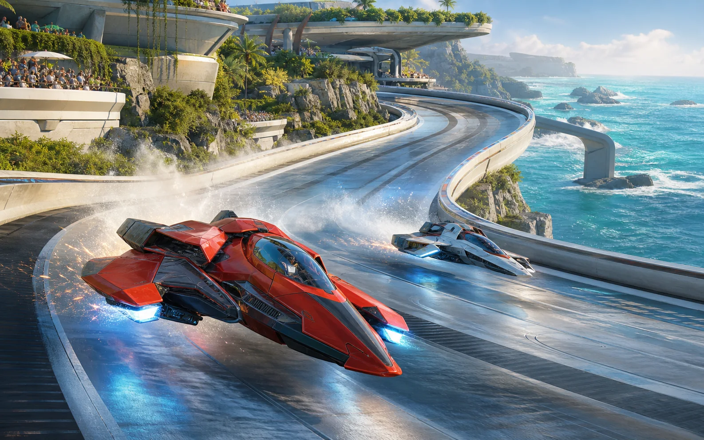

Bem-vindo ao nosso universo
Os videogames nos levam a lugares diferentes, apresentam personagens marcantes e criam desafios para todos os tipos de jogadores.

Ecos de Áurea é uma aventura sobre exploração e mistérios antigos.
Gêneros que você encontra por aqui
- Aventura e exploração
- Corrida e velocidade
- Estratégia e construção
- Competições entre equipes
Jogos em destaque
1. Circuito Orbital

Uma corrida veloz por pistas construídas sobre o oceano.
2. Colônia Vermelha

Um jogo de estratégia sobre construir uma nova comunidade.
O que vem pela frente
- Organizar as páginas do portal.
- Criar caminhos para encontrar os conteúdos.
- Adicionar novas áreas ao GameVerse.